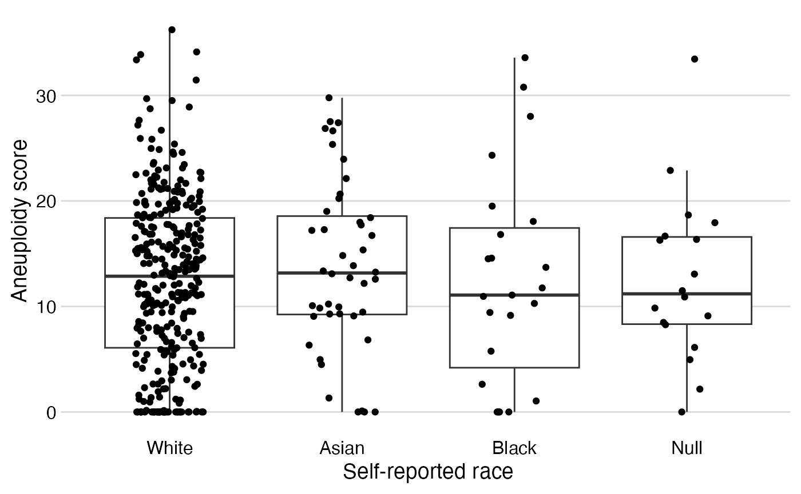

Main results
Study population: Applying and documenting exclusions
Because the main exposure is self-reported race, we will have to exclude participants with missing race from the analytical population.
# All participants: nrow(combined) #> [1] 411 # Exclude with missing race: analytical <- combined %>% filter(!is.na(race)) %>% copy_labels_from(from = combined) # Analytical population: nrow(analytical) #> [1] 393
Note that the dataset contains participants with tumors that were metastatic at diagnosis (M1):
analytical %>% count(mstage) #> # A tibble: 4 x 2 #> mstage n #> <fct> <int> #> 1 M0 184 #> 2 M1 10 #> 3 MX 196 #> 4 <NA> 3
In the analytical dataset, does everyone have an aneuploidy score?
analytical %>% mutate(missing_ascore = is.na(ascore)) %>% select(missing_ascore, race) %>% mytab() %>% mygt()
| missing_ascore X race | White | Asian | Black | Total |
|---|---|---|---|---|
| FALSE | 320 | 43 | 22 | 385 |
| TRUE | 6 | 1 | 1 | 8 |
| Total | 326 | 44 | 23 | 393 |
Table 1: Exposure-stratified characteristics of the study population
analytical %>% select(race, ethnicity, sex, agedx, dxyear, smoke3, bmidx, p_stage, mstage, grade, histology, purity, doubling) %>% table1(by = "race", digits = list(agedx = c(1, 1), dxyear = c(0, 0)))
| Characteristic | Overall | By Self-reported race | ||
|---|---|---|---|---|
| White | Asian | Black | ||
| N | 393 | 326 | 44 | 23 |
| Ethnicity | ||||
| Hispanic Or Latino | 5 (1%) | 5 (2%) | 0 (0%) | 0 (0%) |
| Not Hispanic Or Latino | 368 (99%) | 307 (98%) | 44 (100%) | 17 (100%) |
| Unknown | 20 | 14 | 0 | 6 |
| Sex | ||||
| Female | 101 (26%) | 83 (25%) | 8 (18%) | 10 (43%) |
| Male | 292 (74%) | 243 (75%) | 36 (82%) | 13 (57%) |
| Age at diagnosis | 69.0 (60.0, 76.0) | 70.0 (61.0, 76.8) | 62.5 (54.8, 73.0) | 66.0 (59.5, 73.0) |
| Calendar year of initial diagnosis | 2,011 (2,009, 2,012) | 2,011 (2,009, 2,012) | 2,012 (2,011, 2,013) | 2,011 (2,010, 2,012) |
| Unknown | 15 | 13 | 1 | 1 |
| Smoking status at diagnosis | ||||
| Never | 108 (28%) | 79 (25%) | 24 (55%) | 5 (24%) |
| Former | 192 (51%) | 175 (56%) | 6 (14%) | 11 (52%) |
| Current | 80 (21%) | 61 (19%) | 14 (32%) | 5 (24%) |
| Unknown | 13 | 11 | 0 | 2 |
| Body mass index at diagnosis | 26.0 (23.2, 29.7) | 27.0 (24.2, 30.4) | 21.0 (19.5, 22.4) | 26.2 (23.0, 28.5) |
| Unknown | 49 | 43 | 1 | 5 |
| AJCC pathologic stage | ||||
| Stage I | 2 (1%) | 1 (0%) | 1 (2%) | 0 (0%) |
| Stage II | 125 (32%) | 87 (27%) | 30 (68%) | 8 (35%) |
| Stage III | 134 (34%) | 115 (35%) | 11 (25%) | 8 (35%) |
| Stage IV | 131 (33%) | 122 (38%) | 2 (5%) | 7 (30%) |
| Unknown | 1 | 1 | 0 | 0 |
| Metastases at diagnosis | ||||
| M0 | 184 (47%) | 136 (42%) | 39 (91%) | 9 (39%) |
| M1 | 10 (3%) | 9 (3%) | 0 (0%) | 1 (4%) |
| MX | 196 (50%) | 179 (55%) | 4 (9%) | 13 (57%) |
| Unknown | 3 | 2 | 1 | 0 |
| Histologic grade | ||||
| High Grade | 370 (95%) | 321 (99%) | 26 (59%) | 23 (100%) |
| Low Grade | 21 (5%) | 3 (1%) | 18 (41%) | 0 (0%) |
| Unknown | 2 | 2 | 0 | 0 |
| Histologic subtype | ||||
| Non-Papillary | 262 (67%) | 225 (70%) | 18 (41%) | 19 (83%) |
| Papillary | 127 (33%) | 97 (30%) | 26 (59%) | 4 (17%) |
| Unknown | 4 | 4 | 0 | 0 |
| DNA tumor purity by ABSOLUTE | 0.60 (0.42, 0.79) | 0.58 (0.41, 0.75) | 0.84 (0.69, 0.92) | 0.64 (0.44, 0.84) |
| Unknown | 8 | 6 | 1 | 1 |
| Whole genome doubling | ||||
| 0 | 154 (40%) | 119 (37%) | 28 (65%) | 7 (32%) |
| 1 | 193 (50%) | 166 (52%) | 14 (33%) | 13 (59%) |
| 2 | 38 (10%) | 35 (11%) | 1 (2%) | 2 (9%) |
| Unknown | 8 | 6 | 1 | 1 |
Figure 1: Box-whiskers/dot plots
analytical %>% stripplot(x = "race", y = "ascore") #> Warning: Removed 8 rows containing non-finite values (stat_boxplot). #> Warning: Removed 8 rows containing missing values (geom_point).

Table 2: Stratified and regression analyses
# Part 1: Stratified analytical %>% select(ascore_cat, race) %>% table1(by = "race")
| Characteristic | Overall | By Self-reported race | ||
|---|---|---|---|---|
| White | Asian | Black | ||
| N | 393 | 326 | 44 | 23 |
| Aneuploidy score | ||||
| [0,5] | 75 (19%) | 49 (15%) | 22 (51%) | 4 (18%) |
| (5,10] | 71 (18%) | 61 (19%) | 5 (12%) | 5 (23%) |
| (10,20] | 162 (42%) | 139 (43%) | 13 (30%) | 10 (45%) |
| (20,34] | 77 (20%) | 71 (22%) | 3 (7%) | 3 (14%) |
| Unknown | 8 | 6 | 1 | 1 |
# Function to run linear regression model and return "tidy" results run_lm <- function(data, outcome, exposure, covariates = "") { # Fit linear model fit <- lm(formula = as.formula(paste(outcome, "~", exposure, covariates)), data = data) fit %>% # Obtain coefficients and confidence intervals tidy(conf.int = TRUE) %>% # restrict to exposure variable only filter(str_detect(string = term, pattern = paste0("^", exposure))) %>% # Round estimates mutate_at(.vars = vars(estimate, conf.low, conf.high), .funs = ~trimws(format(round(., digits = 1), nsmall = 1))) %>% # Concatenate point estimate and confidence interval into one string transmute(exp = str_remove(string = term, pattern = exposure), res = paste0(estimate, " (", conf.low, " to ", conf.high, ")")) %>% # Add reference category in front bind_rows(tibble(exp = data %>% select(exp = one_of(exposure)) %>% pull(exp) %>% levels(.) %>% pluck(1), res = "0 (reference)"), .) %>% # Make result table horizontal pivot_wider(names_from = exp, values_from = res) %>% # Add a column with the numnber of observations in model # to detect inadvertent exclusions due to missing data mutate(Observations = fit %>% glance() %>% pull(nobs)) } # Run different outcome regression models: # (1) Define covariate sets tribble(~Model, ~confounders, "Model (1) Age/sex-adjusted", "+ agedx + sex", "Model (2) Model 1 + smoking", "+ agedx + sex + smoke3", "Model (3) Model 2 + histology", "+ agedx + sex + smoke3 + histology", "Model (4) Model 3 + grade", "+ agedx + sex + smoke3 + histology + grade") %>% # (2) Execute run_lm() for each row of the above tibble mutate(res = map(.x = confounders, .f = run_lm, # data, outcome, and exposure are the same each time: data = analytical, outcome = "ascore", exposure = "race")) %>% # (3) Unnest the list column with the results unnest(cols = res) %>% # (4) Remove the cryptic and duplicative "confounders" column select(-confounders) %>% # Format the table mygt()
| Model | White | Asian | Black | Observations |
|---|---|---|---|---|
| Model (1) Age/sex-adjusted | 0 (reference) | -4.3 (-6.7 to -1.9) | -0.9 (-4.1 to 2.4) | 385 |
| Model (2) Model 1 + smoking | 0 (reference) | -3.7 (-6.2 to -1.2) | -1.7 (-5.1 to 1.7) | 372 |
| Model (3) Model 2 + histology | 0 (reference) | -3.4 (-6.0 to -0.9) | -1.6 (-5.0 to 1.7) | 368 |
| Model (4) Model 3 + grade | 0 (reference) | -2.1 (-5.0 to 0.9) | -1.6 (-5.0 to 1.7) | 366 |
Table 3: Effect modification
Models are adjusted for age (and sex, unless sex is an effect modifier).
tribble( ~effectm, ~Stratum, ~subset, ~confounders, "Sex", "Female", analytical %>% filter(sex == "Female"), "+ agedx", "Sex", "Male", analytical %>% filter(sex == "Male"), "+ agedx", "Histology", "Papillary", analytical %>% filter(histology == "Papillary"), "+ agedx + sex", "Histology", "Non-Papillary", analytical %>% filter(histology == "Non-Papillary"), "+ agedx + sex") %>% mutate(res = map2(.x = subset, .y = confounders, .f = run_lm, outcome = "ascore", exposure = "race")) %>% unnest(cols = res) %>% group_by(effectm) %>% select(-subset, -confounders) %>% mygt()
| Stratum | White | Asian | Black | Observations |
|---|---|---|---|---|
| Sex | ||||
| Female | 0 (reference) | -1.5 (-7.3 to 4.2) | 1.3 (-4.1 to 6.8) | 99 |
| Male | 0 (reference) | -4.9 (-7.7 to -2.2) | -2.3 (-6.5 to 1.8) | 286 |
| Histology | ||||
| Papillary | 0 (reference) | -1.9 (-5.7 to 1.9) | -4.8 (-13.1 to 3.4) | 127 |
| Non-Papillary | 0 (reference) | -5.4 (-8.9 to -1.9) | 0.4 (-3.0 to 3.8) | 254 |